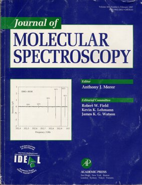
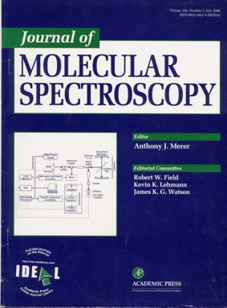

Study of microwave
and submillimeter-wave spectra of the mixed deuterated-protonated
water-dimer isotopomers produced in pulse-nozzle molecular beam (JMS
181, 229-245 (1997)). |
 |
Development of modern broad band millimeter-wave resonator spectroscopy
on the base of fast sweeping frequency synthesizer.
(Measurements of dialectrical properties of solid, liquid and gaseous
samples in particular studies of atmospheric molecular lines.)
The spectrometer has essential advantages among all other known analogs.
(JMS,
202, 107-115 (2000)). |

|
Spectrum of water molecule recorded with high sensitivity by use of cavity-rind-down
spectrometer in the range 555-604 nm was analyzed on the basis of first
principals variational calculations (JMS 205, 117-121
(2001)). |
|
Precision measurement
of shifting and broadening parameters of the 183 GHz water line by
pressure of various atmospheric gases using our spectrometer with
Radio Acoustic Detection. (JMS 230, 196-198,
(2005)).
|
|
Study of submillimeter-wave
spectrum of H20-HF dimer in equilibrium gas phase with continuous
frequency scanning microwave
spectrometer RAD-3 (JMS, 241, 124-135 (2007)). |
|
|
|